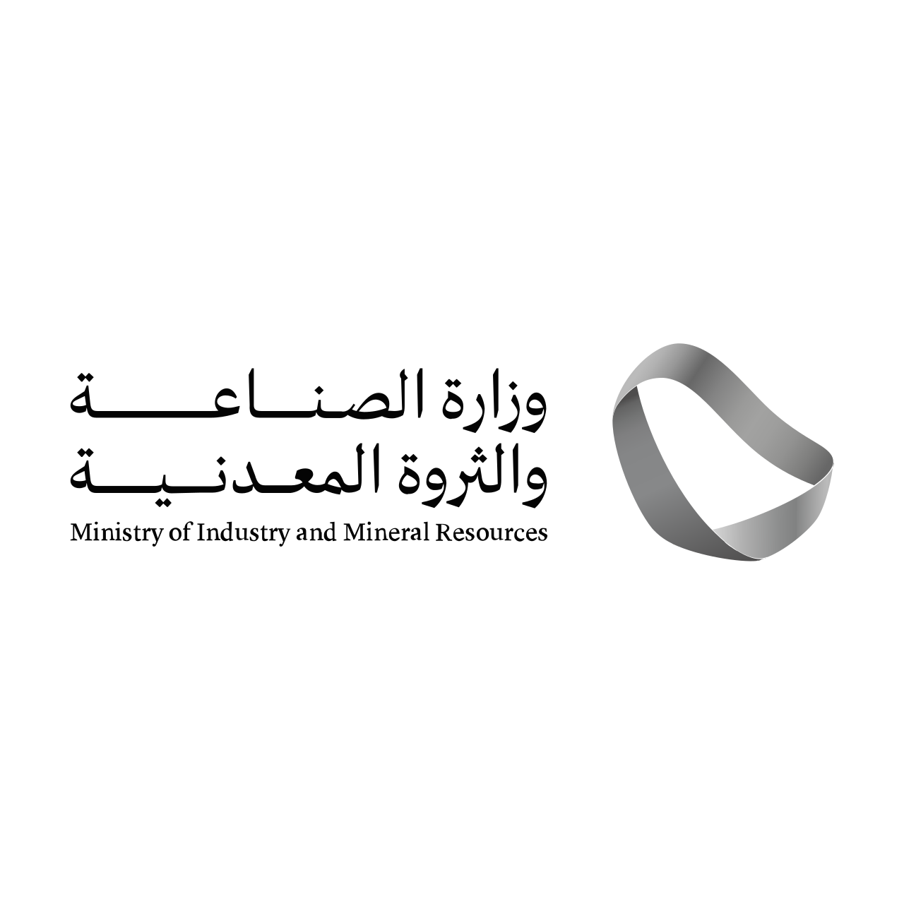
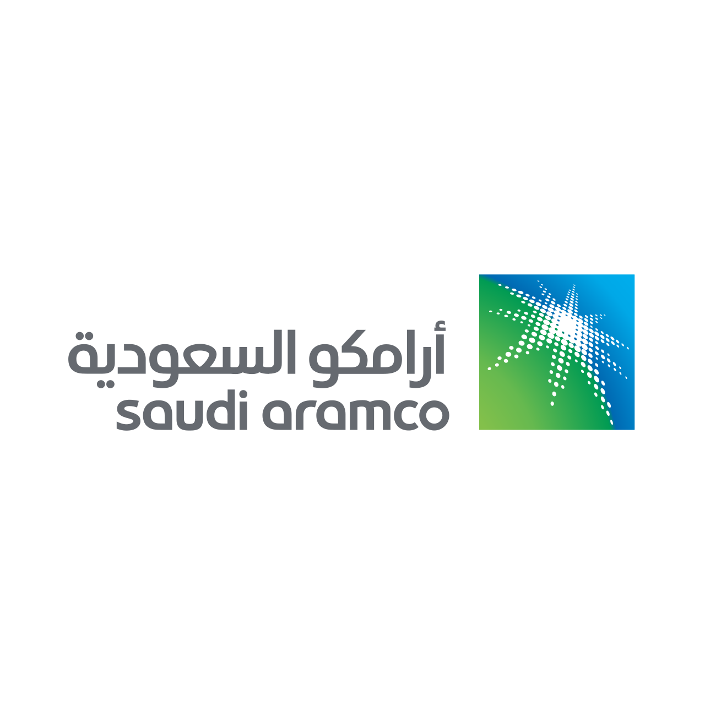

حلول قانونية دقيقة.
وشراكة تُبنى على الثقة.Precise legal solutions.
A partnership built on trust.
تقدم شركة د. أحمد الحمادي للمحاماة والاستشارات القانونية حلولاً قانونية متكاملة للأفراد والشركات، مستندة إلى المعرفة القانونية العميقة، والخبرة العملية، والفهم الدقيق للأنظمة واللوائح في المملكة العربية السعودية.Dr. Ahmad Al Hammadi Law Firm & Legal Consultancy provides integrated legal solutions to individuals and businesses, grounded in deep legal knowledge, practical experience and a precise understanding of Saudi laws and regulations.

شريك قانوني استراتيجي للأفراد والشركات.A strategic legal partner for individuals and businesses.
نعمل من خلال تقديم الاستشارات، وإدارة المنازعات، وصياغة العقود، وتمثيل عملائنا أمام الجهات القضائية وشبه القضائية، عبر فريق من المحامين والمستشارين المتخصصين في مختلف المجالات القانونية.We work through legal advisory, dispute management, contract drafting and representation before judicial and quasi-judicial bodies, supported by lawyers and consultants across a broad range of legal disciplines.
يقوم نهجنا على الدراسة الدقيقة، والتخطيط القانوني الفعّال، والالتزام بأعلى درجات المهنية والسرية، بما يحفظ حقوق عملائنا ويدعم مصالحهم بثقة وكفاءة.Our approach is based on careful analysis, effective legal planning and a high standard of professionalism and confidentiality, protecting client rights and supporting their interests with confidence and efficiency.
تعرّف على الشركةAbout the firm ↗خدمات متكاملة ضمن مجالات ممارسة واضحة.Integrated services, organised into clear practice areas.
تغطي خدماتنا تسعة مجالات ممارسة رئيسية، بما يتيح معالجة احتياجات الأفراد والشركات ضمن إطار قانوني متكامل وواضح.Our services span nine core practice areas, allowing individual and corporate matters to be handled within a clear, integrated legal framework.
الشركات والمعاملات التجاريةCorporate & Commercial
تأسيس الشركات وإعادة هيكلتها · حوكمة الشركات · حوكمة الشركات العائلية وصياغة الميثاق العائليCompany formation & restructuring · Corporate governance · Family business governance & family charters
استكشف المجال ↗Explore ↗ 02
العقود والاتفاقياتContracts & Agreements
صياغة ومراجعة العقود · التفاوض · الاتفاقيات التجاريةContract drafting & review · Negotiation · Commercial agreements
استكشف المجال ↗Explore ↗ 03
التقاضي وتسوية المنازعاتLitigation & Dispute Resolution
القضايا والمنازعات التجارية · المنازعات المدنية · القضايا الإداريةCommercial litigation & disputes · Civil disputes · Administrative cases
استكشف المجال ↗Explore ↗ 04
التحكيمArbitration
نزاعات التحكيم التجاري · تمثيل الأطراف في إجراءات التحكيم · إعداد المذكرات والمرافعاتCommercial arbitration disputes · Representation in arbitration proceedings · Written submissions & pleadings
استكشف المجال ↗Explore ↗ 05
العقار والأوقافReal Estate & Awqaf
المنازعات العقارية · التطوير والاستثمار العقاري · الأوقافReal estate disputes · Real estate development & investment · Awqaf
استكشف المجال ↗Explore ↗ 06
العمل والتوظيفEmployment & Labour
عقود العمل · السياسات واللوائح الداخلية · المنازعات العماليةEmployment contracts · Internal policies & regulations · Labour disputes
استكشف المجال ↗Explore ↗ 07
الزكاة والضرائب والجمارك والتأمينZakat, Tax, Customs & Insurance
المنازعات الزكوية والضريبية · الاعتراضات والتظلمات · المنازعات الجمركيةZakat & tax disputes · Objections & appeals · Customs disputes
استكشف المجال ↗Explore ↗ 08الأحوال الشخصية والتركاتPersonal Status & Estates
التركات وتصفية التركات · قسمة التركات · الوصاياEstates & estate administration · Estate division · Wills
استكشف المجال ↗Explore ↗ 09
القضايا الجزائيةCriminal Matters
التمثيل والدفاع · إعداد المذكرات · القضايا الجزائية ذات الصلة بالأعمالRepresentation & defence · Written submissions · Business-related criminal matters
استكشف المجال ↗Explore ↗دراسة دقيقة. استراتيجية واضحة. متابعة مهنية.Careful analysis. Clear strategy. Professional follow-through.
نبدأ بفهم الوقائع والمستندات واحتياج العميل، ثم نحدد المخاطر والمسارات الممكنة قبل اتخاذ الإجراء القانوني المناسب.We begin by understanding the facts, documents and client needs, then identify risk and available paths before taking the appropriate legal action.
الفهم والتحليلUnderstand & analyse
دراسة متأنية للوقائع والوثائق والسياق النظامي.Careful review of facts, documents and the legal context.
الاستراتيجية القانونيةBuild the legal strategy
تحديد الخيارات والالتزامات والمخاطر والآثار النظامية بوضوح.Define the options, obligations, risks and legal implications clearly.
التنفيذ والمتابعةExecute & follow through
تنفيذ الإجراء ومتابعة الملف بسرية وشفافية وتواصل واضح.Execute the legal action with confidentiality, transparency and clear communication.
شركاء نجاح نفخر بالعمل معهم.Selected organisations presented among the firm’s success partners.
نعتز بثقة الجهات التي تعاملت معها الشركة، ونلتزم بالحفاظ على سرية العلاقة المهنية وطبيعتها.We value the trust of organisations the firm has worked with while respecting the confidentiality and nature of every professional relationship.

وزارة الصناعة والثروة المعدنيةMinistry of Industry and Mineral Resources
أرامكو السعوديةSaudi Aramcoوصول مباشر إلى الجهات والمنصات الرسمية.Direct access to official legal institutions and platforms.
روابط مباشرة إلى أبرز الجهات والمنصات ذات الصلة بالممارسة القانونية، مع تعريف مختصر باختصاص كل جهة.Direct links to key institutions and platforms relevant to legal practice, with a concise description of each.
هيئة الخبراء بمجلس الوزراءBureau of Experts at the Council of Ministers
الأنظمة والتنظيمات واللوائح وما يرتبط بها من أدوات نظامية.Saudi laws, regulations and related legal instruments.
وزارة العدلMinistry of Justice
الخدمات العدلية والمعلومات المرتبطة بالمرفق العدلي.Justice services and information related to the judicial system.
منصة ناجزNajiz
الخدمات القضائية والعدلية الإلكترونية.Digital judicial and justice services.
ديوان المظالمBoard of Grievances
القضاء الإداري والخدمات القضائية المرتبطة به.Administrative judiciary and related judicial services.
المركز السعودي للتحكيم التجاريSaudi Center for Commercial Arbitration
خدمات وإجراءات التحكيم والوسائل البديلة لتسوية المنازعات.Arbitration services and alternative dispute resolution procedures.
هيئة الزكاة والضريبة والجماركZATCA
الأنظمة واللوائح والأدلة المتعلقة بالزكاة والضرائب والجمارك.Rules, regulations and guides for zakat, tax and customs.